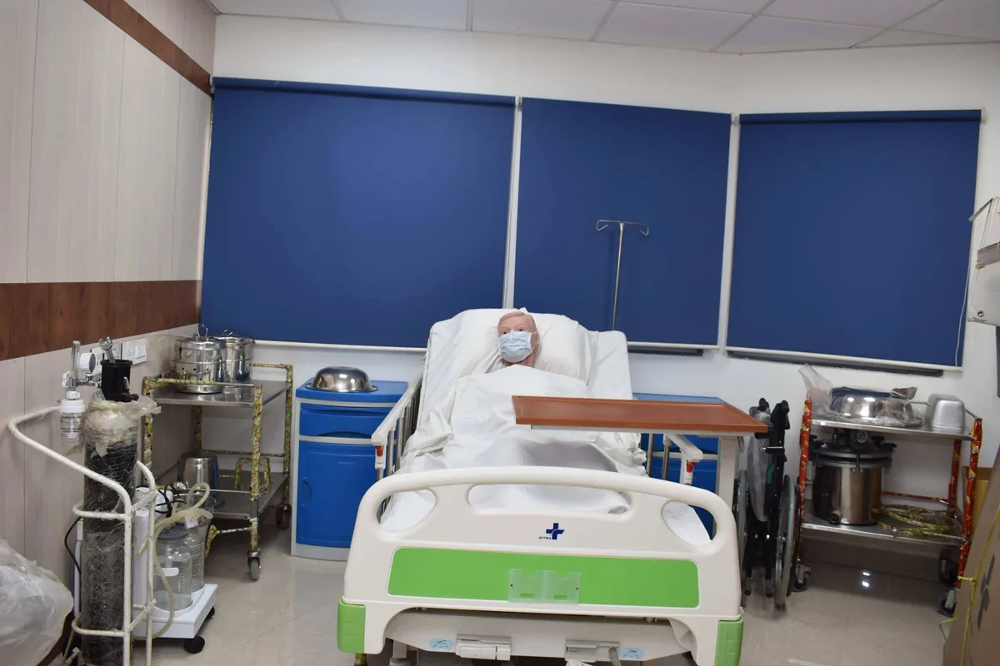

Expanded Nursing Uganda Explanation
Medico-legal issues should be understood beyond a short definition. Link the concept to patient history, focused assessment, common risks, nursing priorities, documentation and evaluation of outcomes.
Contents, 16 sections (tap to expand)
01 Topic: Medico-legal issues
By the end of this topic, you should be able to:
- Understand the relationship between nursing and the law .
- Identify common medico-legal issues in nursing practice.
- Understand the different categories of law relevant to nursing.
- Explain the importance of the code of conduct and ethics for health workers.
- Apply legal and ethical principles in your daily nursing practice.
- Understand the rights of patients in healthcare.
- Understand some key rights of nurses .
02 Nursing and the law
The law is a system of rules that society creates and maintains. It helps to protect property and keep people safe from harm. For nurses, understanding the law is very important because it affects how they provide care and their responsibilities.
03 Importance of Law to Nurses:
- Protect the public from persons unqualified to practice nursing. This ensures that only trained and competent individuals provide care.
- To define the scope of the nurse’s practice (i.e. what s/he is expected by law to do and not to do). This helps nurses know their boundaries and responsibilities.
- To protect patients from legal risks . By following the law, nurses help prevent harm to patients.
- To deal with legal threats effectively. Knowing the law helps nurses protect themselves and their practice.
- To issue licenses for practice and revoke or suspend a license in case of gross incompetence or negligence. This helps maintain high standards in the nursing profession.
04 Categories of Law:
Laws that affect nurses fall into different categories:
- Criminal law: It encompasses conduct considered offensive to the public or society as a whole. Prosecution is brought by the state against an individual for breaking the law known as a crime . Example; a nurse is arrested for stealing drugs, s/he will be charged and brought before the court to handle the case which is prosecuted by the government of Uganda (Uganda vs. the nurse/criminal).
- Civil law: It deals with the rights and responsibilities of private individuals. The civil law is designed to compensate individuals for the harm caused by the health workers. Example; if the nurse negligently administers treatment to a patient which results in to harm, the patient can sue that nurse for his/her negligence and seek compensation for the harm caused. Or the employer of that nurse meets the consequences of the negligence.
- Tort Liability/Crimes: These are crimes that are punishable by law. There are two types of tort i.e. intentional and non-intentional. Intentional tort is punishable by law (criminal or civil law.) Intentional Torts: These are harmful acts done intentionally. Assault: Threatening or attempting to touch or treat a person with out his/her consent. Example; Administering an injection to a patient who had refused it . Patients have a right to refuse care or withdraw consent at any time.
- Sexual assault: where find the health worker harasses the patient/client sexually.
- False detention: restraining another person with out legal justification or his/her consent. An example; Medical asylums or isolation centers for the presumed mentally ill .
- Fraud: purposeful misrepresentation that causes harm to another person. Example; Misrepresenting qualifications when applying for licensure .
- Negligence: deviation from standard of care that results in HARM to the patient. Example; Administering treatment negligently and contrary to the professional standards e.g. wrong medication, wrong route of administration, wrong dosage and concentration. Mistaken identity i.e. preparing a wrong patient for an operation, to exchange babies in the labour room/suit, to exchange dead bodies in the mortuary. Failure to communicate verbally or in written concerning the patient’s condition . Poor or no maintenance of patient’ records . Failure to count sponges and instruments during surgery leading to retaining of some in the patient’s body. Loss or damage to patient’s property and fame . Breach of duty (negligent action/omission that violates the standard of care expected.) Physical or psychological damage of the patient . Failure to report and protect victims e.g. child abuse, sexual assault, patients restrained by law, mentally incompetent and infectious disease exposure.
- Abandonment: termination of a patient’s care with out assuring the continuation of care at the same level or higher.
- Euthanasia (mercy killing): taking positive step to kill a person in order to end his/her suffering is murder.
- Breach of scope of practice: failure to follow the range of activities and limitations of a given medical provider as defined by the state legislation, references national curricula or may be enhanced by medical direction, protocols and standing orders.
- Breach of confidentiality: failure to keep privileged information i.e. patient’s history, assessment findings, treatment rendered etc.
05 Rights of a Patient
Optimal care of a patient requires harmonious collaboration between the patient and the care provider. Understanding patient rights is important.
06 Purpose of Patient Rights:
- Help the patients feel more confident in the health care setting.
- To stress the importance of a strong relationship between the patients and their health care givers.
- To indicate the key roles patients play in staying healthy.
07 The following are the rights of a patient:
- A patient has a right to accurate and clear information relevant to his/ her health care plan except in emergencies.
- The patient has a right to know the identity of medical personnel involved in their care.
- Patients have a right to fully participate in decision making related to their health care.
- A patient has a right to refuse any recommended treatment or care plan.
- They have a right to be informed of the consequences of any action.
- Patients who are unable to participate have a right to be represented by parents, guardians or other family members .
- Patients have a right to respect and non-discrimination from all members of the health care team at all times and under all circumstances.
- The patients have a right to every consideration of privacy concerned with case discussion and consultation. Examination and treatment should be conducted in a manner that protects the patient’s privacy.
- All communications and records pertaining the patient’s care must be treated as confidential by the hospital or health care team.
- Patients have a right to review the records pertaining to their medical care and to have the information explained or interpreted as necessary except when information is restricted by law.
- The patients have a right to choose health care providers who will ensure access to appropriate high quality of care.
- The patients have a right to complain about the care or appeal for proper care internally or externally (an independent system).
- A patient has a right to know the policies of a hospital regarding their care.
08 Rights of a Nurse
While the focus is often on patient rights, nurses also have important rights that protect them and enable them to provide good care. Based on the curriculum's content on ethical standards and the Nurses and Midwives Act, some key rights of a nurse include:
- The right to a safe working environment : This includes protection from violence, hazards, and infections.
- The right to fair treatment and compensation : Nurses are entitled to just payment for their work as agreed in their contract.
- The right to refuse to participate in unethical or illegal practices : Nurses are not obligated to carry out orders that are against their professional code or the law (e.g., participating in an illegal abortion).
- The right to appropriate resources and support to provide care: This includes having the necessary equipment, supplies, and adequate staffing.
- The right to continuing education and professional development : To maintain a high standard of competence, nurses have the right to opportunities for learning and improving their skills.
- The right to be treated with respect by patients, colleagues, and superiors.
- The right to privacy regarding their personal information.
- The right to belong to professional associations (like the Uganda Nurses and Midwives Council).
- The right to acknowledge limitations in their knowledge or skills and decline duties they are not competent to perform safely.
09 Code of conduct and ethics for health workers (from the Nurses and Midwives Act, 1996, Part IV)
This section outlines the expected behavior and responsibilities of health workers in Uganda, as defined by the Nurses and Midwives Act.
- Article 29. Code of conduct: This part of the Act contains the specific rules of conduct that all health workers in Uganda must follow in their practice.
- Article 30. Responsibility to patients: A health worker must put the health, safety and interest of the patient first and always treat each patient with due respect .
- You must ensure that nothing you do or fail to do harms the patient's interest, condition, or safety.
- A nurse must provide the patient with relevant, clear and accurate information about their health and how it will be managed.
- If a patient is able to give consent, medical treatment should only be given with their full, free, and informed consent . In emergencies, when immediate action is needed and getting consent might delay care, intervention may be done. For patients who are minors or not able to give consent (incompetent), consent must be obtained from their parent, relative, guardian, or the head of the hospital.
- Nurses must respect the confidentiality of information about the patient and their family. This information should not be shared with anyone without the patient's consent or the consent of an appropriate guardian, unless sharing the information is in the patient's best interest or required by law.
- A health worker taking care of someone who is detained (like in a prison) must do so in the best interest of the detainee and must maintain strict confidentiality.
- A health worker shall not take, ask for, or accept any bribe from a patient or their relatives.
- When carrying out an examination or providing a report for an authorized person, maximum care must be taken to protect the confidentiality and interest of the patient.
- A health worker shall no abandon a patient under their care.
- Article 31. Responsibility to the community: The nurse must ensure that their actions do not endanger the safety or condition of the public.
- Health workers must promote effective health services and inform the health team and other authorities whenever they become aware of a health hazard to the community (e.g., an outbreak of cholera or dysentery).
- Article 32. Responsibility to health unit/institution (place of work): Health workers must follow the rules and regulations of their workplace, meet the expectations of the health unit, and work to fulfill the mission of the institution.
- Article 33. Responsibility to law, profession and self: A health worker must observe the law and uphold the dignity of their profession and accepted ethical principles.
- Health workers shall not take part in activities that discredit their profession or the delivery of health services. They must report anyone who engages in illegal or unethical conduct (like stealing or not following the dressing code) without fear.
- You must respect the confidentiality of patient and family information. This information should not be shared with anyone without the patient's written consent or the consent of an appropriate guardian, unless the law requires it.
- A health worker must maintain a high standard of professional knowledge and skills by continuing their medical education.
- A health worker shall not advertise their professional skills directly or indirectly, or try to take patients away from colleagues. If they notify the public about available services, they must do so appropriately.
- A health worker shall not perform their duties while under the influence of alcohol.
- A health worker shall not engage in dangerous lifestyles such as alcoholism or drug addiction, which can damage the reputation of the profession.
- Health workers shall not support or be linked with cults or unscientific practices that claim to contribute to health care.
- A health worker must be registered with their relevant professional council and be a member of the national association.
- Nurses must recognize any limitations in their knowledge and competence and should refuse a duty or responsibility if they are not able to perform it safely and skillfully.
- Article 34. Responsibility to colleagues: A health worker must co-operate with their professional colleagues, recognize, and respect each other's expertise to provide the best possible holistic care as a team.
10 Introduction to the practice room (PEX 1.1.9) & Hospital economy (Sub-topic 1.1.10)
These are practical/observational aspects of this topic.
11 Introduction to the Practice Room:
This involves getting familiar with the practice room (sometimes called a skills lab). This is where you will practice nursing procedures in a safe environment before working with real patients. You'll learn where equipment is kept and how to use it correctly.
12 Hospital Economy:
Understanding hospital economy means understanding how resources (like money, supplies, and equipment) are managed efficiently in the hospital. This includes things like managing ward supplies and participating in basic planning related to resources to ensure the hospital runs smoothly.
- Introduction to Ethical Standards (Sub-topic 1.1.1 to 1.1.8 - includes legal and ethical concepts)
- Introduction to the practice room (PEX 1.1.9)
- Hospital economy (Sub-topic 1.1.10)
(Note: The curriculum also lists LWAs/PEXs for other topics in CN-1101 like Infection Prevention and Control and General Nursing Care, which we will cover later.)
(This is covered within the sub-topics above.)
- Nursing and the law (Categories of Law, Importance of Law to Nurses)
- Code of conduct for Nurses
- Principles of professional ethics and etiquette
- Patient’s rights
- Nurses’ rights
- Nursing standards and qualities of a nurse
- General principles and rules of all nursing procedures
- Hospital economy
- Uganda Catholic Medical Bureau (2015) Nursing and Midwifery procedure manual 2nd Edition Print Innovations and Publishers Ltd. Uganda
- Nettina .S,M (2014) Lippincott Manual of Nursing Practice 10th Edition, Wolters Kluwer, Philadelphia, Newyork
- Gupta, L.C., Sahu,U.C. and Gupta P.(2007):Practical Nursing Procedures. 3rd edition. JAYPEE brothers, New Delhi.
- Craveni, R. Hirnle, C. and Henshaw, M.C. (2017). Fundamentals of Nursing Human Health and Function. 8th Edition. Wolters Kluwer
- Hill, R., Hall, H and Glew, P. (2017). Fundamentals of Nursing and Midwifery, A person-Centered Approach to care. Wolters Kluwer
- Rosdah I, BC and Kowalkski, TM (2017) Text book for Basic Nursing 11th Edition Wolters Kluwer.
- Samson .R. (2009) Leadership and Management in Nursing Practice and Education 1st Edition Jaypee Brothers Medical Publishers India.
- Taylor.C.R (2015) Fundamentals of Nursing, The Art and Science of person – centred nursing care, 8th Edition Wolters Kluwer, Health/Lippincott Williams and Wilkins.
- Timby, K.B (2017) Fundamentals of Nursing Skills and concept 11th Edition Wolters Kluwers, Lippincotts Williams and Wilkins.
- Lynn, P. (2015) Tyler's Clinical nursing skills, A Nursing Process Approach 4th Edition Wolters Kluwers, China
- Gupta, D.S. (2005) Nursing Interventions for the critically ill 1st Edition Jaypee Brothers Medical Publishers Ltd. India.
- Uganda Catholic Medical Buraeu (2010) Nursing and Midwifery Procedure Manual. 1st Ed. Print Innovations and Publishers Ltd., Uganda.
- Carter, J. P. (2012) Lippincott's Textbook for nursing Assistant. 3rd Edition. Walters Kluwers. Lippingcotts Williams and Wilkins
- Jensen, S. (2015) Nursing Health Assessment; A host Practice Approach. 2nd Edition. Wlaters Kluwer,
- UCMB. (2015) Nursing and Midwifery Procedure Manual. 2nd Edition. Print Innovation and Publishers Ltd. Kampala. Uganda.
- Karesh, P. (2012) First Aid for Nurses. 1st Edition. Jaypee Brothers Medical Publishers Ltd. India.
- Molley, S. (2007) Nursing Process; A Clinical Guide. 2nd Edition. Jaypee Brothers Medical Publishers Ltd. India.
- Carter, J.P. (2016) Lippincott's Textbook for Nursing Assistants. 4th Edition. Wolters Kluwer, Lippincotts Williams and Wilkins.
- Rahim,A. (2017). Principles and practices of community medicine. 2nd Edition. JAYPEE Brothers Medical Publishers Ltd. New Delhi
- Cherie Rector, (2017) ,Community & Public Health Nursing: Promoting The Public's Health 9e Lippincott Williams and Wilkins
- Gail A. Harkness, Rosanna Demarco (2016) Community and Public Health Nursing 2nd edition, Lippincott Williams and Wilkins
- Basavanthapp, B.T and Vasundhra, M.K (2008), Community Health Nursing, 2nd edition. JAYPEE Brothers Medical Publishers Ltd. New Delhi
- Kamalam, S. (2017), Essentails in Community Health Nursing Practice 3rd edition. JAYPEE Brothers Publishers Ltd. New Delhi
- James F. McKenzie, PhD, MPH, MCHES, MEd,and Robert R. Pinger, PhD, (2018) An Introduction to Community & Public Health, 9th edition, Jones and Bartlett Publishers. Sandburg, Massachusetts.
- Maurer, F.A, Smith, C.M (2005), Community /Public health Nursing Practice, 3rd edition ELSEVIER SAUNDERS, USA
- МОН, (2013) Occupational Safety and Health Training Manual, 1st Edition
- МОН, (2008), Policy for Mainstreaming Occupational Health & Safety In The Health Service Sector.
- Wooding, N. Teddy, N. Florence, N. (2012) Primary Health Care in East Africa. 1st Edition. Fountain Publishers. Kampala. Uganda.
13 Nursing Uganda Clinical Lens
Use Medico-legal issues as a practical nursing topic, not only a memorized definition. Translate theory into safe decisions, accountability, communication and service improvement.
- What to understand first: define medico-legal issues, identify the normal or expected pattern, then explain what changes when the patient is unwell.
- Why it matters in care: the nurse must recognize risk early, explain findings clearly, document accurately and know when to escalate.
- How to revise it: connect each point to assessment, nursing diagnosis or care problem, intervention, rationale and evaluation.
14 Assessment Guide
- The problem, stakeholders, available resources, policy requirements and ethical issues.
- Risks to patients, staff, confidentiality, quality, costs and continuity.
- Documentation, reporting lines, supervision and evaluation measures.
15 Nursing Priorities, Rationales and Outcomes
- Use evidence, policy and professional standards to guide action.
- Communicate clearly, document decisions and protect confidentiality.
- Evaluate whether the action improves safety, learning or service delivery.
The rationale for these priorities is patient safety: nursing actions should prevent deterioration, reduce discomfort, support recovery and create clear evidence for the next caregiver.
- Expected outcome: The plan is documented, realistic, ethical and improves patient care or learning outcomes.
16 Patient Teaching and Revision Check
- Explain medico-legal issues in simple language the patient or caregiver can repeat back.
- Teach warning signs, medicine or follow-up instructions, hygiene or lifestyle points where relevant.
- For exams, prepare a short answer using: definition, causes or risk factors, signs, assessment, management, complications and prevention.
- For ward practice, document baseline findings, actions taken, patient response and the plan for review.
Illustrations and Diagrams (3)


Related Video Lectures
Watch nursing lecture videos on YouTube for this topic. Opens in a new tab.
Watch on YouTubeExternal link: YouTube may use its own cookies and terms. Nursing Uganda is not affiliated with YouTube.